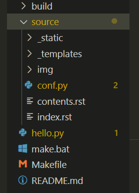

how to use Sphinx + Read the docs¶
first of all , you need to install python
install sphinx and theme¶
then open a cmd window and do the follow steps :
pip install -U Sphinx
pip install sphinx-rtd-theme
build the directory tree¶
now you can get to start to build your own book
cd to your github repositories folder,
then open a cmd use command sphinx-quickstart
use the make stript to pack your book to html¶
./make.bat html
the rest of all¶
commit and push to github.
sign in read the docs and connect to your repository.
after all
everyone can read your documents in the web .
really cooooool !